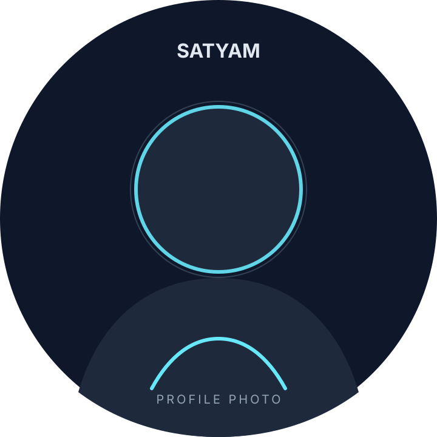

BACKEND SOFTWARE ENGINEER
Building backend systems that stay fast, secure & reliable.
Java & Spring engineer with 3 years of telecom BSS experience, working across high-volume microservices, batch processing, event-driven flows and legacy C/Tuxedo systems.
public class Satyam {
private final System system;
build(scale, resilience) {
return system
.design()
.ship()
.observe()
.improve();
}
}
// 5M+ telecom tx/day
// 500K+ events/day
// 99.8% SLA
JAVA 21
KAFKA
BSS
01 / ABOUT
Engineering with a business-first mindset.
My work sits where software engineering meets real-world business workflows. At Amdocs, I have worked on telecom BSS systems spanning order management, CRM/CSM, account and customer flows, plus Java/Spring platforms that process millions of transactions daily.
I enjoy the hard parts: understanding a distributed failure, finding the bottleneck, making the system observable, shipping the change safely, and staying on the bridge when production matters.
Promoted to Software Engineer in 2 yearsMexico on-site deliveryEnd-to-end ownership
02 / EXPERIENCE
From delivery to ownership.
Amdocs · Gurgaon · Aug 2023 - Present
Jul 2025
Present
Present
Software Engineer
Amdocs · Telecom BSS
- Led a near real-time transaction audit platform using Spring Boot/Spring Batch, tracing customer transactions across hops with a unique trace-ID.
- Used Oracle SQL and index tuning to reduce root-cause identification from 1-2 hours to under 5 minutes across 2-3M transactions/day.
- Upgraded core services from Java 8 to Java 21, Spring Batch 3.x to 5.x and Spring Boot 3, including the Jakarta EE migration.
- Developed and debugged CRM/CSM services in C on Oracle Tuxedo and drove P1/P2 incident response using Splunk and batch diagnostics.
- Built MCP servers on approved internal infrastructure to connect logs, databases and internal APIs with AI coding agents; rolled out team-wide.
Aug 2023
Jun 2025
Jun 2025
Associate Software Engineer
Amdocs · Telecom BSS
- Built and scaled Java/Spring Boot microservices supporting 5M telecom transactions/day with 99.8% SLA.
- Engineered multithreaded Spring Batch pipelines with partitioning, chunk processing and retry/restart/skip controls.
- Published 500K+ Kafka events/day and delivered 20+ secured REST endpoints with p99 latency under 200 ms.
03 / FLAGSHIP PROJECT
Amdocs · On-site, MexicoZERO-DOWNTIME CUTOVER
Azure Authentication
Modernization
Modernizing authentication for enterprise Spring Batch workloads - replacing static credentials with service-to-service identity while retaining backward compatibility.
01Spring Batch
→02MSAL / Azure Entra
→03OAuth2 + X.509
→04Production
04 / PERSONAL LAB
Independent build · ATOM
My offline-first AI playground.
Beyond product engineering, I have been building ATOM - a personal AI assistant designed around local models, voice interaction, memory, retrieval and tool workflows on my Mac.
ArchitectureLocal-first
Core focusAgent workflows
InteractionVoice + desktop
Design goalUseful, private, extensible
05 / ENGINEERING STACK
Tools I use to make systems move.
Focused on backend engineering, reliability and production problem-solving.
Backend
Java 21 / 8 · Spring Boot · Spring Batch · Microservices · REST APIs · Event-Driven Architecture
Data & performance
Oracle · PL/SQL · SQL tuning · Indexing · JDBC · JdbcTemplate · Redis · Spring Cache
Messaging
Apache Kafka · Producers · Event-driven transaction flows · High-volume processing
Security & platform
Spring Security · OAuth2 · JWT · MSAL / Azure Entra · X.509 · Docker · Kubernetes · Jenkins
Core engineering
Multithreading & concurrency · Design patterns · System design · JUnit 5 · Mockito · Linux
Observability & AI
Splunk · Grafana · MCP (Model Context Protocol) · AI agent workflows
Telecom BSS domain
Amdocs Ensemble CRM · CSM · OMS / Ordering · Account & Customer Management · Oracle Tuxedo · production P1/P2 recovery
06 / RECOGNITION
Amdocs Excellence Award
Individual recognition for resolving critical production incidents.
Client recognition
Recognized for delivering the Mexico authentication modernization to production.
DSA problems solved
LeetCode and CodeChef practice across data structures and algorithms.
07 / EDUCATION
National Institute of Technology, Durgapur
B.Tech · Computer Science & Engineering
8.0CGPA / 102019 - 2023
08 / CONTACT
Let's build something meaningful.
For backend engineering, platform engineering or systems-heavy work, feel free to reach out.